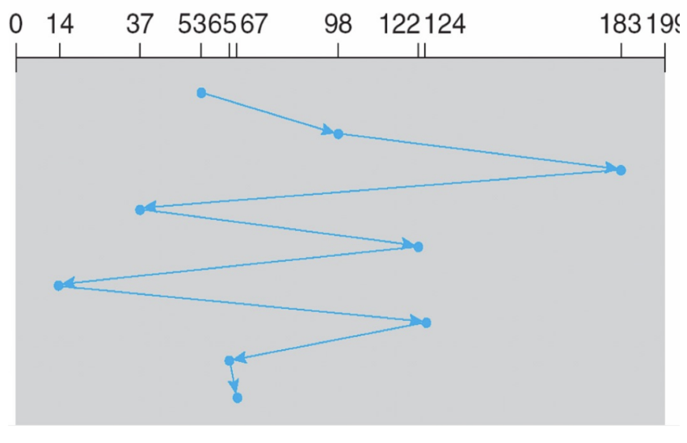
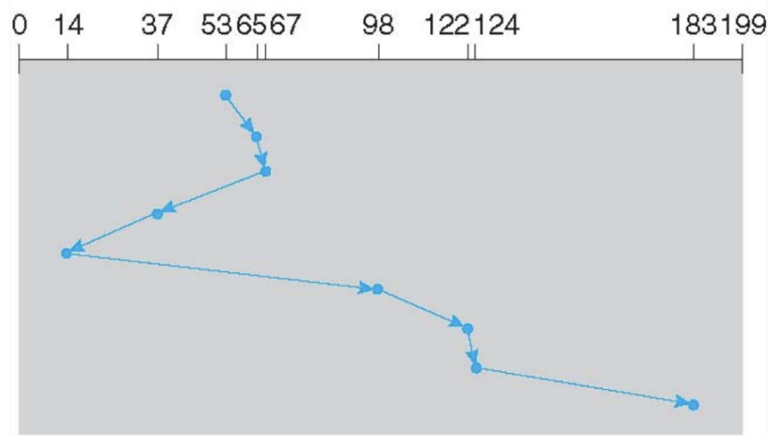
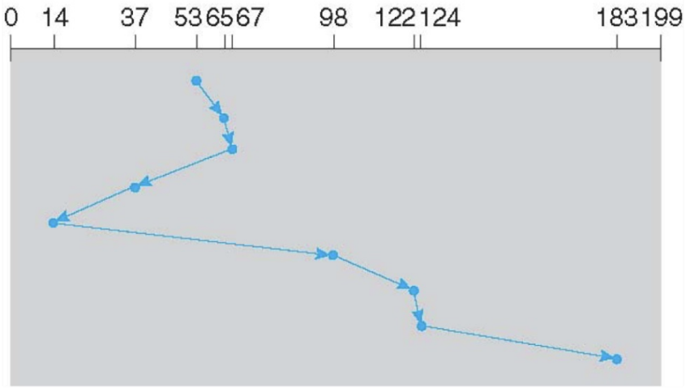
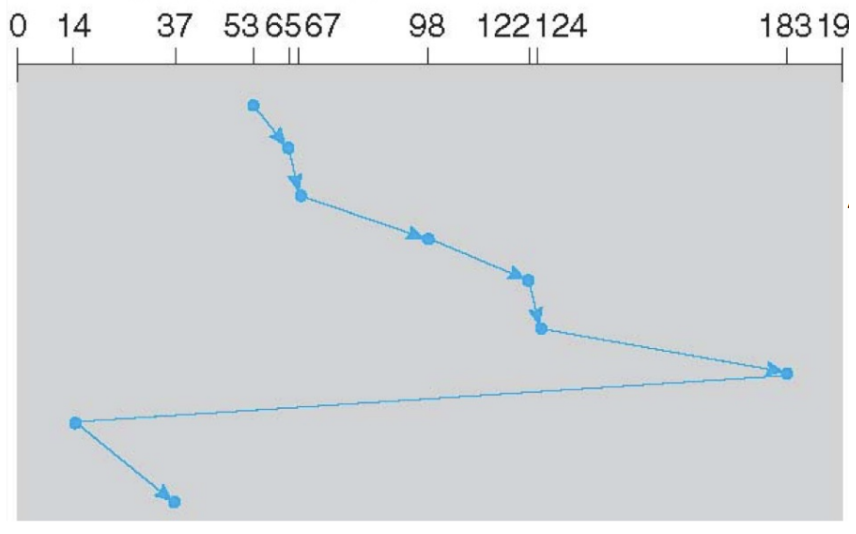
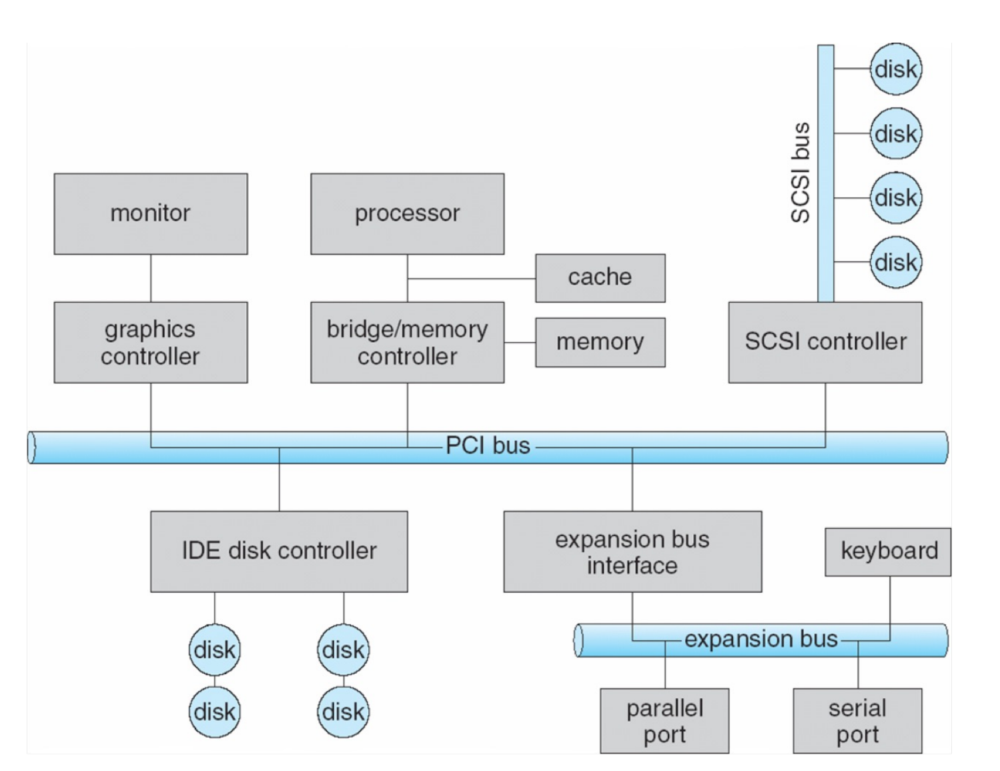
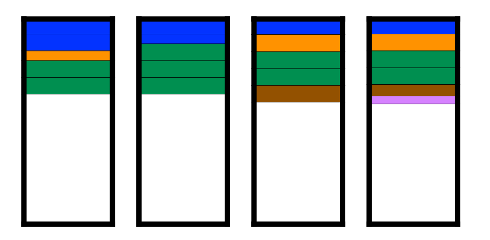
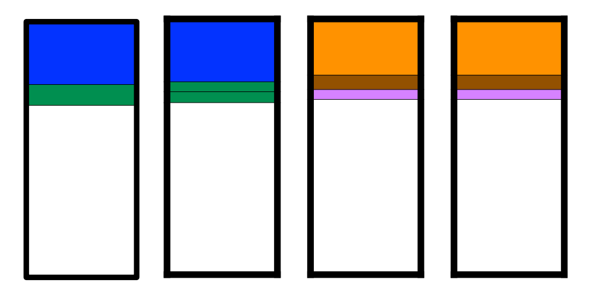
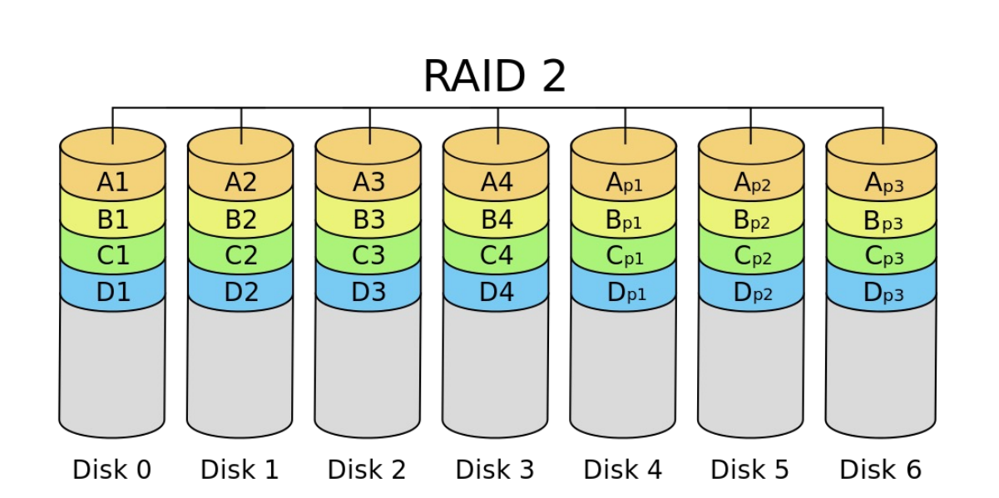
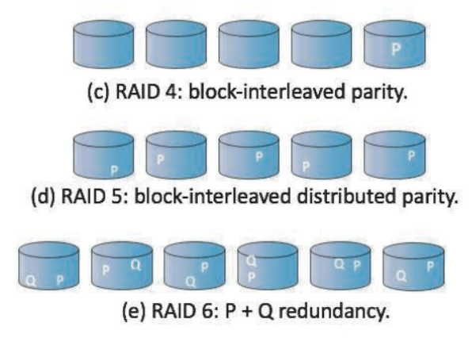

大容量存储¶
磁盘结构¶
- 磁盘驱动器被寻址为 logical blocks（LBA）的一维数组
- 逻辑块是最小的传输单位，被顺序映射到磁盘的扇区中
- Positioning time(random-access time)：将磁臂移动到所需扇区的时间，包括寻道时间和旋转延迟
- seek time：将磁头移动到目标柱面的时间
- rotational latency：目标扇区旋转到磁头下方所需的时间
- 平均访问时间 = 平均寻道时间 + 平均延迟
Quote
- 对于最快的磁盘：3ms + 2ms = 5ms
- 对于慢速磁盘：9ms + 5.56ms = 14.56ms
- 平均 I/O 时间：平均访问时间 + (待传输数据 / 传输速率) + 控制器开销
Example
在 7200 RPM 的磁盘上传输一个 4KB 的块，平均寻道时间为 5ms，传输速率为 1gb/sec，控制器开销为 0.1ms：
5ms + 4.17ms + 4KB / (1gb/sec) + 0.1ms（4.17 为平均延迟）
Warning
主要慢在寻道时间和旋转延迟（不好提升）
-
性能
- transfer rate：驱动器与计算机之间数据流动的速率
- 理论值为 6gb/sec
- 实际约为 1gb/sec
- seek time 从 3ms 到 12ms（台式机驱动器常见为 9ms）
- 基于主轴转速的延迟：1/rpm * 60（平均延迟 = 1/2 延迟）
- transfer rate：驱动器与计算机之间数据流动的速率
-
磁盘带宽：数据传输的速度，即 数据/时间
- 数据：传输的总字节数
- 时间：从发出第一个请求到完成最后一次传输之间的时间
磁盘调度¶
- 磁盘调度：选择下一个要服务的待处理磁盘请求
- 目标：减小寻道时间
- 过去，操作系统负责队列管理和磁盘驱动头调度；现在，已内置在存储设备、控制器的固件（fireware）中，仅提供 lba（逻辑块寻址）处理请求的排序
调度算法的选择
- 如果 I/O 比较少，FCFS 和 SSTF 即可
- 如果 I/O 较多，一般使用 LOOK/C-LOOK
- 如果是 SSD（不用 seek），一般使用 FCFS
Example
柱面请求队列：98, 183, 37, 122, 14, 124, 65, 67（范围为 [0, 199]）
初始磁头位置：53
FCFS¶
- 最简单的调度算法
- 优点：每个请求的机会公平；不会无限期推迟
- 缺点：不尝试优化寻道时间；可能无法提供最佳服务
Example
磁头移动总量为 640 个柱面

SSTF¶
-
最短寻道时间优先：
- 是 SJF（最短作业优先）调度的一种形式，可能存在饥饿现象
- 与 SJF 不同，SSTF 可能不是最优的
-
优点：平均响应时间减少；吞吐量增加
-
缺点：
- 需要预先计算寻道时间的开销
- 如果某个请求的寻道时间比新到达的请求长，可能会导致该请求出现“饥饿”
- 响应时间的方差较大，因为 SSTF 仅有利于部分请求
Example
磁头移动总量为 236 个柱面

SCAN¶
- elevator algorithm
- 优点：高吞吐量；响应时间方差低；平均响应时间良好
- 缺点：对于磁臂刚刚访问过位置的请求，等待时间较长
Example
磁头移动总量为 236 个柱面

C-SCAN¶
-
循环扫描（Circular-scan）旨在提供更均匀的等待时间
- 当磁头到达末端时，立即返回到起始处
- 在返回途中不服务任何请求（本质上将柱面视为一个循环列表）
-
优点：与 SCAN 相比，提供更均匀的等待时间
LOOK/C-LOOK¶
注意
SCAN 和 C-SCAN 会将磁头从一端移动到另一端，即使中间没有 I/O 请求
- LOOK 是 SCAN 的一个变体，C-LOOK 是 C-SCAN 的一个变体
- 实现：磁头在每个方向上仅移动到最后一个请求所在的位置（不会移动到 disk 的末尾）
- 优点：防止了由于不必要的磁盘端点遍历而产生的额外延迟
Example

非易失性存储器¶
- 如果特性类似磁盘驱动器，则称为固态硬盘 (SSDs)
Quote
其他形式包括 USB 驱动器（优盘、闪存盘）、DRAM 磁盘替代品、主板表面贴装存储以及主内存
- 优点：可以比 HDD 更可靠；速度快得多（没有移动部件，因此没有寻道时间或旋转延迟）
- 缺点：单位 MB 价格更贵；寿命可能较短，需要仔细管理；容量较小；总线可能太慢
- 调度算法：FCFS
-
特性：
- 以 page 为增量进行读写（类似扇区）
- 但无法就地重写，必须先被擦除，且必须擦除 page 所在的整个 block
- 在磨损前只能擦除有限次数
- 寿命通过每日全盘写入次数 (DWPD) 来衡量
-
NAND 闪存控制器算法
- 控制器维护闪存转换层 (FTL) 表：
- 原因：由于无法重写，页面最终会充满有效和无效数据的混合
- 目的：为了追踪哪些逻辑块是有效的
- 还实现了垃圾回收以释放无效页面空间
- 分配预留空间为垃圾回收提供工作空间
- 每个单元都有寿命，因此需要均衡地写入所有单元
- 控制器维护闪存转换层 (FTL) 表：
磁带¶
-
磁带是早期的辅助存储类型，现在主要用于备份
-
优点：容量大；存储在磁带上的数据相对永久
- 缺点：访问时间慢，尤其是随机访问（寻道时间远高于磁盘，随机访问需要卷带/倒带）
磁盘管理¶
- 物理格式化：将磁盘划分成扇区，以便控制器进行读/写
- 扇区结构：包含头部信息、数据以及纠错码 ECC
- 操作系统在磁盘上记录其自身的数据结构，将磁盘分区为若干柱面组，每个组被视为一个逻辑磁盘
- 逻辑格式化分区以在其上建立文件系统（文件 I/O 以簇为单位完成）
- 根分区包含 OS，Mounted at boot time
- 其他分区可以包含其他操作系统、其他文件系统，或者是原始分区
- 其他分区可以自动或手动挂载
- 引导块：包含足够的代码以了解如何从文件系统中加载内核
Quote
- 引导块初始化系统
- 引导程序存储在 ROM、固件中
- 自举加载程序程序存储在引导分区的引导块中
- 原始磁盘访问适用于想要进行自身块管理、让操作系统避开的应用程序（例如数据库）
- 使用诸如扇区备用之类的方法来处理坏块
- 操作系统提供交换空间管理
磁盘连接¶
- 磁盘连接到计算机的方式：
- 主机连接存储 (host-attached storage)
- 网络连接存储 (network-attached storage)：通过网络而非本地总线提供的存储
- 存储区域网络 (storage area network)：连接服务器和存储单元的私有网络，使用高速互连和高效协议
- 主机连接存储
- e.g.：硬盘、RAID 阵列、CD、DVD、磁带...
- 磁盘可以通过 I/O bus直接连接到计算机 e.g. SCSI, IDE

RAID¶
- 独立磁盘冗余阵列 (RAID)：操作系统可以通过多个总线连接的磁盘来实现
- 磁盘是不可靠、缓慢但廉价的
- 使用冗余：提高可靠性；提高速度（同时读，提高磁盘带宽）
- 关键技术：这些技术可以随意组合
- 数据镜像 (Data Mirroring)：在多个磁盘上保留相同的数据
-
数据条带化 (Data Striping)：将数据分散在多个磁盘上以允许并行读取
e.g. 从 8 个磁盘读取一个字节的各个位
-
纠错码 (ECC)：校验位（保留用于在驱动器故障时重建丢失位的信息）
- 层级
- RAID 0：数据条带化分布在多个磁盘上，没有校验位（无冗余）
- 提高性能，但不可靠
Example
固定条带大小；5 个不同大小的文件；4 个磁盘

- 在两个磁盘上保存一组数据的完全副本（或镜像）
- 使用的磁盘数量是 RAID 0 的两倍（浪费）
- 除非发生（极不可能的）同时故障，否则可以保证可靠性
- 可以通过从寻道时间最快的磁盘读取来提升性能
Example

- RAID 2：
- 在位级 (bit-level) 进行数据条带化
- 使用汉明码 (Hamming code) 进行纠错（已不再使用）
- 汉明码（4位数据 + 3位校验）允许使用 7 个磁盘
Example

- RAID 3：使用 4 个数据磁盘和 1 个校验磁盘
- 没有被实际应用，因为粒度太小，现在无法单独读出来一个比特，至少应该读出一个字节
- RAID 4：基本类似于 RAID 3，但改用条带/块 (strips/blocks) 进行交替（一个（小规模）读取仅涉及一个磁盘）
- RAID 5：类似于 RAID 4，但校验信息分散在所有磁盘上，而不是仅有一个专用的校验磁盘
- RAID 6：通过增加一个额外的校验块 Q 来扩展 RAID 5

RAID 与文件系统
- RAID 只能检测/从磁盘故障中恢复，不能防止或检测数据损坏或其他错误
- 像 Solaris ZFS 这样的文件系统增加了额外的检查来检测错误
- ZFS 为所有文件系统 (FS) 数据和元数据添加了校验和
- 校验和与指向数据/元数据的指针存放在一起
- 可以检测并纠正数据和元数据损坏
- ZFS 在存储池中分配磁盘，而不是使用卷或分区
- 存储池中的文件系统共享该池，并从池中分配/释放空间